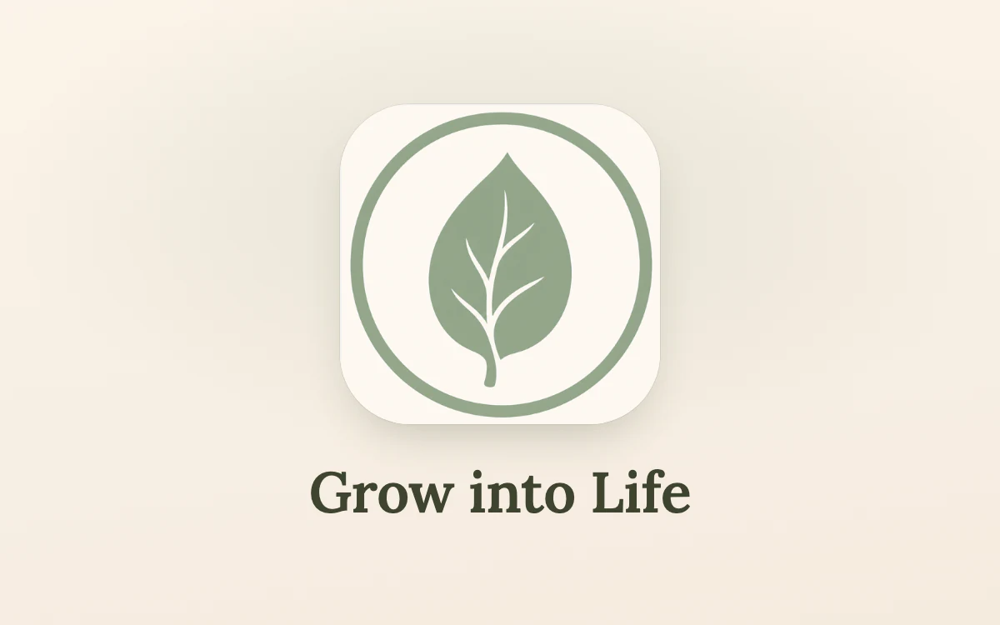

A one man show
Chasing Dreams Interactive
We chase our dreams.
Studio
One day I decided to make them real.
As a child I always had so many ideas and dreams in my head. I give everything I have to bring them to life — to take the picture in my head and put it out into the world.

02 iOS · In development
Grow into Life

Baby tracking for iOS. Sleep, feeds, growth — quietly kept. View